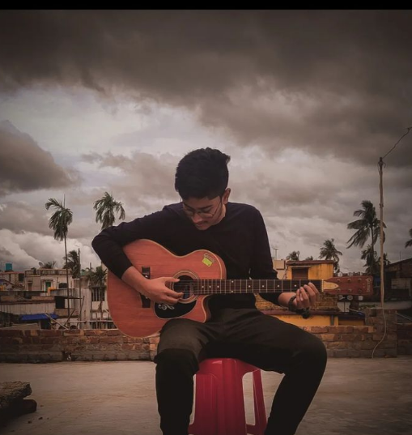

Hello! My name is Arunava , and this is the story of my life as a school boy in Class 12 at ISC (Indian School Certificate) level. From the early days of childhood to the crucial year of Class 12, my experiences, friendships, and challenges have shaped me into the person I am today. Chapter 1: Early Days of Curiosity I was born into a small, close-knit family that always encouraged me to explore and question the world around me. My curiosity knew no bounds, and from an early age, I had a keen interest in books and learning. As I entered the formal schooling phase, my fascination for science and technology blossomed, and I eagerly delved into every subject presented to me. Chapter 2: Struggles and Triumphs As I moved through the years of primary and secondary education, I faced various challenges. There were times when certain subjects seemed daunting, and self-doubt would creep in. However, with the unwavering support of my parents, teachers, and friends, I overcame my fears and emerged stronger. It was during these times that I learned the value of hard work and persistence.
